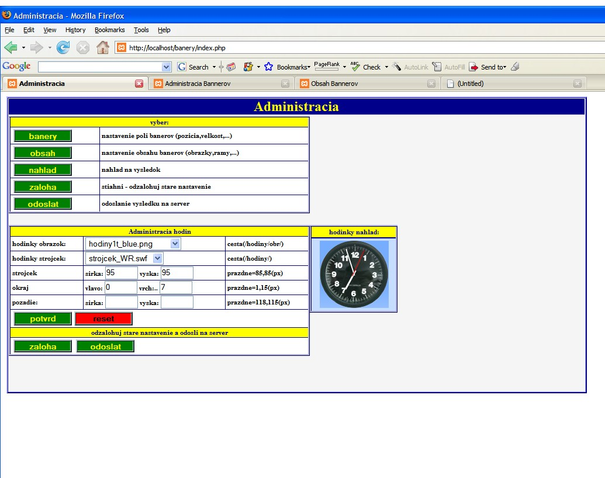
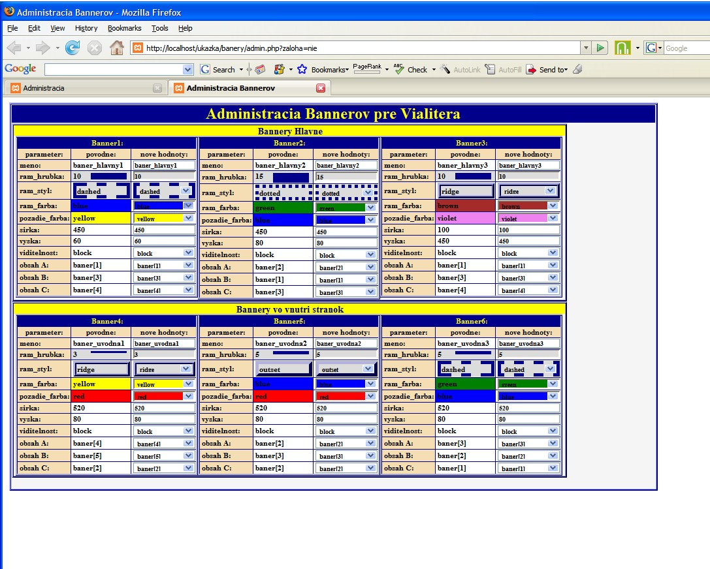
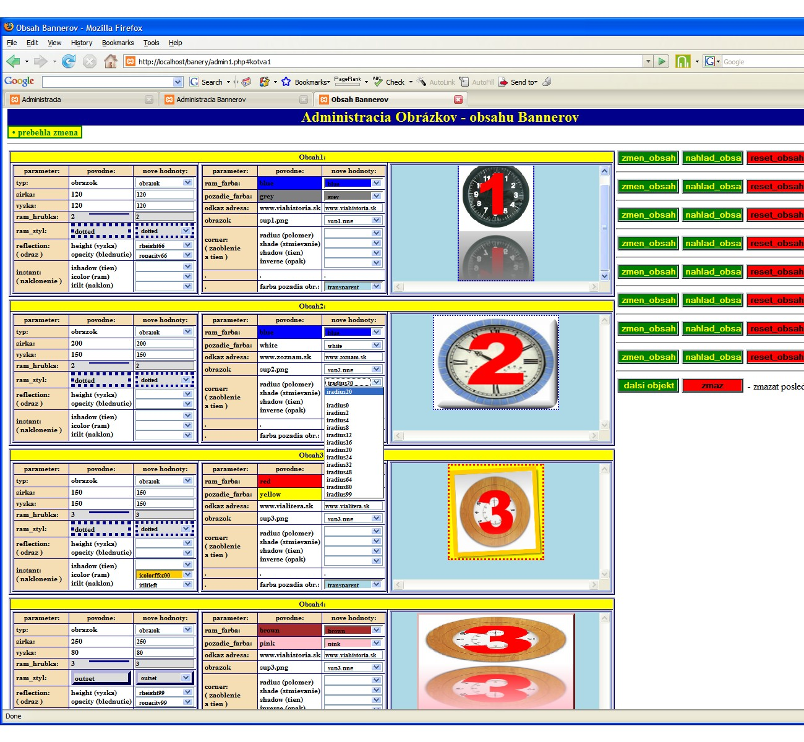

↑ o úroveò vvyššie
Prezentácia: kníhkupectvo reklamnı systém
1. 
2. 
3. 
• banerovı - reklamnı systém, pomocou Javascriptu aplikuje zmeny v systéme a úprave reklamy.
Na serveri kníhkupectva sú obslu�né Javascripty, kt. spracujú dátovı vıstup tohto programu a pod¾a
neho nastavia grafiku a úpravu reklám. Prenos prebehne cez FTP protokol.
Takto neobvyklé riešenie cez Javascript si vy�iadala nemo�nos� zasahovania do skriptov v apl. Zoneru InShop.
( I keï ešte nie je nasadené, testovanie potvrdilo, �e je to a� prekvapivo stabilné - zapnutı Javascript je
i tak nevyhnutnı pre samu apl. InShopu, èi�e u�ívate¾ bez neho i tak nemal šancu... )
• ( PHP, HTML - CSS, Javascript )